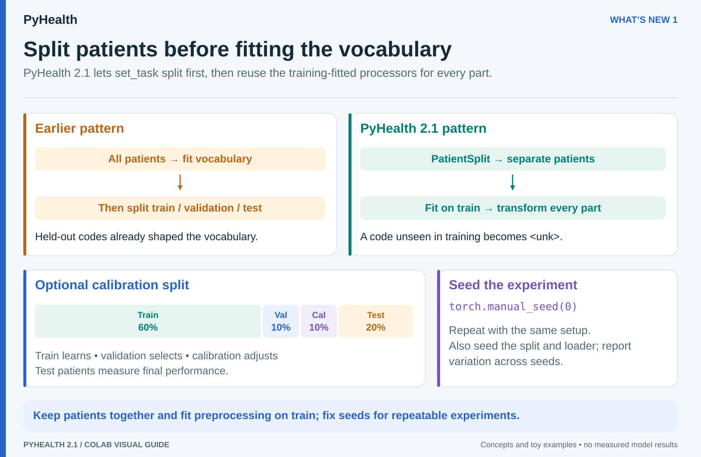

1
Splits you can trust, runs you can repeat
set_task(task, split=PatientSplit(...)): why fitting vocabularies on all patients leaks test information, measured on real numbers- Four-way splits with a calibration set
- Reproducible training from
torch.manual_seedalone, and seeded loaders - The one action item for 2.0 users: rebuild caches made with more than 10 workers

Visual guide · click to enlarge